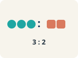
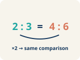
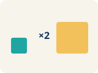

Unit 3 · Standard 6.RP.3a
Ratio Tables
Key Vocabulary Level 1 support
Picture first, then the word, then a plain-language meaning. Say each word out loud.

Cups of juice: 2, 4, 6 | Cups of water: 3, 6, 9
Ratio table
A table of equal ratios that shows a pattern.

2:3 = 4:6 = 6:9
Equivalent ratio
Two ratios that mean the same thing, like 1:2 and 2:4.

2:3 × 2 → 4:6 (scale factor is 2)
Scale factor
The number you multiply both parts of a ratio by to get an equal ratio.

Each row adds 2 cups juice and 3 cups water
Pattern
A rule that numbers follow again and again.
2:3 → 4:6 → 6:9 (add 2 and 3 each time)
Additive pattern
Adding the same amount to both parts of a ratio table to make new rows.
Key Ideas & Notes
What we're learning today
I can use a ratio table to find equivalent ratios.
Notice
Chef Academy is hosting a pancake breakfast for the whole school!
Key idea
I can use a ratio table to find equivalent ratios.
Words I'll use
🤔 Think About It
- What two quantities are being compared in the recipe?
- What happens to both quantities when you double the recipe?
- How could a table help you organize the scaling?
See the notes in action: watch one worked all the way through, then try the next with the same steps.
Follow each step as your teacher solves it.
Problem: A recipe uses 3 eggs for every 5 cups of flour. How many eggs are needed for 15 cups of flour?
- 9
- 6
- 10
- 12
- Step 1 The scale factor is 15 ÷ 5 = 3.
- Step 2 Multiply the eggs by 3: 3 × 3 = 9 eggs.
✅ Answer: A. 9
Solve this one with your class using the same steps.
Problem: Which row does NOT belong in a ratio table for 4:5?
- 6:10
- 8:10
- 12:15
- 16:20
- Step 1
- Step 2
Answer:
Now try one on your own. Show every step.
Problem: A ratio table shows 3:7, 6:14, and 9:21. What is the next row?
- 12:28
- 10:24
- 12:24
- 15:28
Turn & Talk — Discussion Points Level 1 support Level 2
Talk with a partner about each prompt. If you need help getting started, use the Level 1 sentence stems. Ready for more? Try the Level 2 question.
Chef Reyes's pancake batter uses 2 cups of mix for every 3 cups of milk. To feed 4 times as many people, what happens to BOTH ingredient amounts?
Start here: When the recipe gets 4 times bigger, both the mix and the milk get 4 times bigger.
💡 Need a hint?
Try starting with the word "Ratio table" or "Equivalent ratio". Re-read the question and underline what it is asking you to compare or find. Use one number or word from the problem as your evidence.
Sentence starters (optional)
When I make 4 batches, I multiply both ___ and ___ by ___.Cuando hago 4 tandas, multiplico tanto ___ como ___ por ___.
The ratio stays the same because ___.La razón se mantiene igual porque ___.
Listen for: A strong answer says BOTH quantities are multiplied by the same number (4), so 2:3 becomes 8:12, keeping the ratio equivalent.
Explain why you cannot just add 4 to the mix and 4 to the milk to feed 4 times as many people. Use the words equivalent ratio.
- Adding the same number to both does not work because ___.
- To keep an equivalent ratio I must ___ both parts, not ___.
In your pancake ratio table, how did you find each new row from the 2:3 starting row?
Start here: I multiplied both 2 and 3 by the same scale factor to get each new row.
💡 Need a hint?
Try starting with the word "Ratio table" or "Equivalent ratio". Re-read the question and underline what it is asking you to compare or find. Use one number or word from the problem as your evidence.
Sentence starters (optional)
I multiplied both numbers by ___ to get ___.Multipliqué ambos números por ___ para obtener ___.
The ratios are equivalent because ___.Las razones son equivalentes porque ___.
Listen for: Listen for use of a scale factor (multiplying both parts) and recognition that every row in the table is an equivalent ratio showing the same pattern.
Compare the additive pattern (add 2 and 3 each row) with the scale-factor method. Why do BOTH give correct rows for this table?
- Adding 2 and 3 works here because ___.
- The scale-factor method and the additive pattern agree because ___.
The juice bar makes a smoothie with 3 scoops of berries for every 2 cups of yogurt and needs enough for 20 people. How is this the same as our pancake table?
Start here: Both use a ratio table to scale a 2-quantity recipe up to a larger amount.
💡 Need a hint?
Try starting with the word "Ratio table" or "Equivalent ratio". Re-read the question and underline what it is asking you to compare or find. Use one number or word from the problem as your evidence.
Sentence starters (optional)
This is like our ratio table work because ___ and ___ are related by ___.Esto es como nuestro trabajo con tablas de razones porque ___ y ___ se relacionan por ___.
I can find the amounts by multiplying both by ___.Puedo encontrar las cantidades multiplicando ambos por ___.
Listen for: A strong answer connects both scenarios as scaling a ratio with a scale factor, keeping berries-to-yogurt (3:2) equivalent across every serving.
If the juice bar suddenly needs servings for 30 people instead of 20, generalize how the scale factor changes and what stays the same.
- The scale factor changes from ___ to ___, but the ___ stays the same.
- I know the new amounts are still correct because ___.
Interactive Unit Projects
Apply your math skills in these interactive dashboard games and coding labs.
Unit 3 Project — Ratios in Action
Capstone project: apply ratio reasoning to a real-world challenge.
Ratio Tables Game (6.RP.3a)
Make tables of equivalent ratios and find missing values.
Write About the Math The Writing Revolution
I can explain my table using the words ratio table, equivalent ratio, scale factor, and pattern.
1. Kernel Sentence subject + verb
Model: Ratio table is a table of equal ratios that shows a pattern.Tabla de razones es una tabla de razones iguales que muestra un patrón.
Write a kernel sentence about ratio table. Use a subject and a verb.Escribe una oración base sobre tabla de razones. Usa un sujeto y un verbo.
2. Sentence Expansion because · but · so
Kernel: Ratio table matters in mathTabla de razones importa en matemáticas
Expand the kernel three ways. Add a reason, a contrast, and a result.
Ratio table matters in math because ___.Tabla de razones importa en matemáticas porque ___.
Ratio table matters in math, but ___.Tabla de razones importa en matemáticas, pero ___.
Ratio table matters in math, so ___.Tabla de razones importa en matemáticas, entonces ___.
3. Sentence Types 4 ways to write a math idea
Tell one true fact about ratio table.Di un hecho verdadero sobre ratio table.
Ratio table ___.
Ask a question about ratio table.Haz una pregunta sobre ratio table.
How does ___ ?¿Cómo ___ ?
Show excitement about ratio table.Muestra entusiasmo sobre ratio table.
Wow, ___ !¡Guau, ___ !
Tell a partner what to do with ratio table.Dile a un compañero qué hacer con ratio table.
First, ___ .Primero, ___ .
4. Explain Your Reasoning use a sentence starter
When I make 4 batches, I multiply both ___ and ___ by ___.Cuando hago 4 tandas, multiplico tanto ___ como ___ por ___.
The ratio stays the same because ___.La razón se mantiene igual porque ___.
I multiplied both numbers by ___ to get ___.Multipliqué ambos números por ___ para obtener ___.
Try It
Solve on your own. Check the answer key when you are done.
1. In a ratio table, 4 maps to 10. What does 12 map to?
- 30
- 24
- 36
- 18
2. A ratio table keeps the ratio 5:8. If one row is 15, what is its partner value?
- 24
- 20
- 23
- 40
Stretch Your Thinking Level 2 enrichment
Challenge task — explain your reasoning in full sentences.
A recipe uses 4 cups of flour for every 3 cups of sugar. A student filled in a ratio table: 4:3, 8:6, 12:9, 14:12. Find and fix the error in the last row. Explain what went wrong.
Reflect — Exit Ticket
A salad dressing recipe uses 2 tablespoons of oil for every 5 tablespoons of vinegar. How many tablespoons of oil are needed for 20 tablespoons of vinegar?
- 8
- 10
- 7
- 12
Answer Key & Teacher Guide
- We Try (notes): A. 6:10 — 6:10 simplifies to 3:5, not 4:5. The other ratios (8:10, 12:15, 16:20) all simplify to 4:5.
- You Try (notes): A. 12:28 — The pattern adds 3 to the first value and 7 to the second each time. After 9:21: 9+3=12 and 21+7=28. The next row is 12:28.
- Try It 1: A. 30 — 12 is 3 times 4, so multiply 10 by 3 to get 30.
- Try It 2: A. 24 — 15 is 3 times 5, so the partner is 3 times 8 = 24.
- Exit Ticket: A. 8 — Scale factor: 20 ÷ 5 = 4. Multiply oil by 4: 2 × 4 = 8 tablespoons of oil.
Writing (TWR) — what to look for
- Kernel sentence: A complete sentence needs a subject and a verb. Example: Ratio table is a table of equal ratios that shows a pattern.
- Expansion: because gives a reason, but shows a contrast or exception, so shows a result. Answers vary; each must keep the kernel idea and add the correct kind of detail.
- Sentence types: Statement ends with a period, question with "?", exclamation with "!", and a command starts with an action verb (a "bossy" verb).